1 Blocks, Scripts, and Sprites
This chapter describes the Snap features inherited from Scratch; experienced Scratch users can skip to Section 1.2.
Snap is a programming language—a notation in which you can tell a computer what you want it to do. Unlike most programming languages, though, Snap is a visual language; instead of writing a program using the keyboard, the Snap programmer uses the same drag-and-drop interface familiar to computer users.
Start Snap. You should see the following arrangement of regions in the window:

(The proportions of these areas may be different, depending on the size and shape of your browser window.)
A Snap program consists of one or more scripts, each of which is made of blocks. Here’s a typical script :
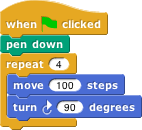
The five blocks that make up this script have three different colors, corresponding to three of the eight palettes in which blocks can be found. The palette area at the left edge of the window shows one palette at a time, chosen with the eight buttons just above the palette area. In this script, the gold blocks are from the Control palette; the green block is from the Pen palette; and the blue blocks are from the Motion palette. A script is assembled by dragging blocks from a palette into the scripting area in the middle part of the window. Blocks snap together (hence the name Snap for the language) when you drag a block so that its indentation is near the tab of the one above it:
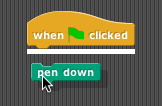
The white horizontal line is a signal that if you let go of the green block it will snap into the tab of the gold one.
1.1 Hat Blocks and Command Blocks
At the top of the script is a hat block, which indicates when the script should be carried out. Hat block names typically start with the word “when”; in the square-drawing example in ?fig-draw-square, the script should be run when the green flag near the right end of the Snap tool bar is clicked. (The Snap tool bar is part of the Snap window, not the same as the browser’s or operating system’s menu bar.) A script isn’t required to have a hat block , but if not, then the script will be run only if the user clicks on the script itself. A script can’t have more than one hat block, and the hat block can be used only at the top of the script; its distinctive shape is meant to remind you of that.1
The other blocks in our example script are command blocks . Each command block corresponds to an action that Snap already knows how to carry out. For example, the block tells the sprite (the arrowhead shape on the stage at the right end of the window) to move ten steps (a step is a very small unit of distance) in the direction in which the arrowhead is pointing. We’ll see shortly that there can be more than one sprite, and that each sprite has its own scripts. Also, a sprite doesn’t have to look like an arrowhead, but can have any picture as a costume. The shape of the move block is meant to remind you of a Lego™ brick; a script is a stack of blocks. (The word “block” denotes both the graphical shape on the screen and the procedure, the action, that the block carries out.)
The number 10 in the move block above is called an input to the block. By clicking on the white oval, you can type any number in place of the 10. The sample script on the previous page uses 100 as the input value. We’ll see later that inputs can have non-oval shapes that accept values other than numbers. We’ll also see that you can compute input values, instead of typing a particular value into the oval. A block can have more than one input slot. For example, the glide block located about halfway down the Motion palette has three inputs.
Most command blocks have that brick shape, but some, like the repeat block in the sample script, are C‑shaped. Most C-shaped blocks are found in the Control palette. The slot inside the C shape is a special kind of input slot that accepts a script as the input.
In the sample script
the repeat block has two inputs: the number 4 and the script
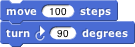
C-shaped blocks can be put in a script in two ways. If you see a white line and let go, the block will be inserted into the script like any command block:
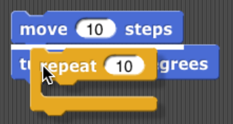
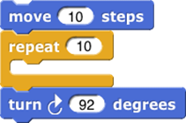
But if you see an orange halo and let go, the block will wrap around the haloed blocks:

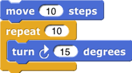
The halo will always extend from the cursor position to the bottom of the script:
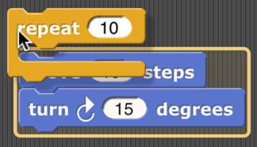
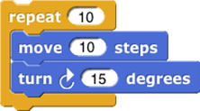
If you want only some of those blocks, after wrapping you can grab the first block you don’t want wrapped, pull it down, and snap it under the C-shaped block.
For “E-shaped” blocks with more than one C-shaped slot, only the first slot will wrap around existing blocks in a script, and only if that C-shaped slot is empty before wrapping. (You can fill the other slots by dragging blocks into the desired slot.)
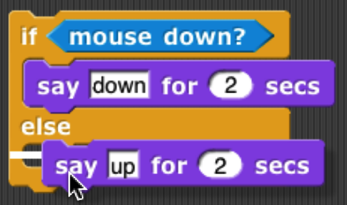
1.2 Sprites and Parallelism
Just below the stage is the “new sprite button” . Click the button to add a new sprite to the stage. The new sprite will appear in a random position on the stage, with a random color, but always facing to the right.
Each sprite has its own scripts. To see the scripts for a particular sprite in the scripting area, click on the picture of that sprite in the sprite corral in the bottom right corner of the window. Try putting one of the following scripts in each sprite’s scripting area:
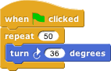
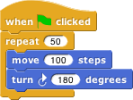
When you click the green flag, you should see one sprite rotate while the other moves back and forth. This experiment illustrates the way different scripts can run in parallel. The turning and the moving happen together. Parallelism can be seen with multiple scripts of a single sprite also. Try this example:

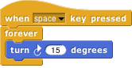
When you click the green flag, the sprite should move back and forth
When you press the space key, the sprite should move forever in a circle, because the move and turn blocks are run in parallel. (To stop the program, click the red stop sign at the right end of the tool bar.)
1.2.1 Costumes and Sounds
To change the appearance of a sprite, paint or import a new costume for it. To paint a costume, click on the Costumes tab above the scripting area, and click the paint button . The Paint Editor that appears is explained in Section 12.3.5. There are three ways to import a costume. First select the desired sprite in the sprite corral. Then, one way is to click on the file icon in the tool bar, then choose the “Costumes…” menu item. You will see a list of costumes from the public media library, and can choose one. The second way, for a costume stored on your own computer, is to click on the file icon and choose the “Import…” menu item. You can then select a file in any picture format (PNG, JPEG, etc.) supported by your browser. The third way is quicker if the file you want is visible on the desktop: Just drag the file onto the Snap window. In any of these cases, the scripting area will be replaced by something like this:
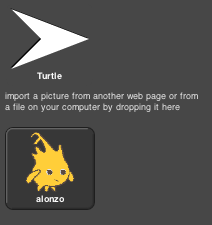
Just above this part of the window is a set of three tabs: Scripts, Costumes, and Sounds. You’ll see that the Costumes tab is now selected. In this view, the sprite’s wardrobe, you can choose whether the sprite should wear its Turtle costume or its Alonzo costume. (Alonzo, the Snap mascot, is named after Alonzo Church, a mathematician who invented the idea of procedures as data , the most important way in which Snap is different from Scratch.) You can give a sprite as many costumes as you like, and then choose which it will wear either by clicking in its wardrobe or by using the  or
or  block in a script. (Every costume has a number as well as a name. The
block in a script. (Every costume has a number as well as a name. The next costume block selects the next costume by number; after the highest-numbered costume it switches to costume 1. The Turtle, costume 0, is never chosen by next costume.) The Turtle costume is the only one that changes color to match a change in the sprite’s pen color.
Protip: switches to the previous costume, wrapping like next costume.
In addition to its costumes, a sprite can have sounds; the equivalent for sounds of the sprite’s wardrobe is called its jukebox. Sound files can be imported in any format (WAV, OGG, MP3, etc.) supported by your browser. Two blocks accomplish the task of playing sounds. If you would like a script to continue running while the sound is playing, use the block . In contrast, you can use the block to wait for the sound’s completion before continuing the rest of the script.
1.2.2 Inter-Sprite Communication with Broadcast
Earlier we saw an example of two sprites moving at the same time. In a more interesting program, though, the sprites on stage will interact to tell a story, play a game, etc. Often one sprite will have to tell another sprite to run a script. Here’s a simple example:
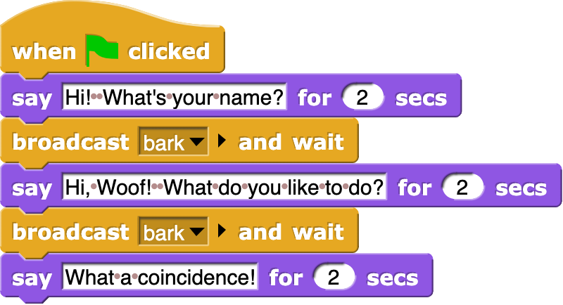
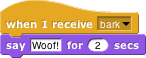
In the block  , the word “bark” is just an arbitrary name I made up. When you click on the downward arrowhead in that input slot, one of the choices (the only choice, the first time) is “new,” which then prompts you to enter a name for the new broadcast. When this block is run, the chosen message is sent to every sprite, which is why the block is called “broadcast.” (But if you click the right arrow after the message name, the block becomes
, the word “bark” is just an arbitrary name I made up. When you click on the downward arrowhead in that input slot, one of the choices (the only choice, the first time) is “new,” which then prompts you to enter a name for the new broadcast. When this block is run, the chosen message is sent to every sprite, which is why the block is called “broadcast.” (But if you click the right arrow after the message name, the block becomes  , and you can change it to to send the message just to one sprite.) In this program, though, only one sprite has a script to run when that broadcast is sent, namely the dog. Because the boy’s script uses
, and you can change it to to send the message just to one sprite.) In this program, though, only one sprite has a script to run when that broadcast is sent, namely the dog. Because the boy’s script uses broadcast and wait rather than just broadcast, the boy doesn’t go on to his next say block until the dog’s script finishes. That’s why the two sprites take turns talking, instead of both talking at once. In Chapter 7 you’ll see a more flexible way to send a message to a specific sprite using the tell and ask blocks.
Notice, by the way, that the say block’s first input slot is rectangular rather than oval. This means the input can be any text string, not only a number. In text input slots, a space character is shown as a brown dot, so that you can count the number of spaces between words, and in particular you can tell the difference between an empty slot and one containing spaces. The brown dots are not shown on the stage if the text is displayed.
The stage has its own scripting area. It can be selected by clicking on the Stage icon at the left of the sprite corral. Unlike a sprite, though, the stage can’t move. Instead of costumes, it has backgrounds: pictures that fill the entire stage area. The sprites appear in front of the current background. In a complicated project, it’s often convenient to use a script in the stage’s scripting area as the overall director of the action.
1.3 Nesting Sprites: Anchors and Parts
Sometimes it’s desirable to make a sort of “super-sprite” composed of pieces that can move together but can also be separately articulated. The classic example is a person’s body made up of a torso, limbs, and a head. Snap allows one sprite to be designated as the anchor of the combined shape, with other sprites as its parts.
To set up sprite nesting , drag the sprite corral icon of a part sprite onto the stage display (not the sprite corral icon!) of the desired anchor sprite. The precise place where you let go of the mouse button will be the attachment point of the part on the anchor.
Sprite nesting is shown in the sprite corral icons of both anchors and parts: 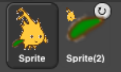
In this illustration, it is desired to animate Alonzo’s arm. (The arm has been colored green in this picture to make the relationship of the two sprites clearer, but in a real project they’d be the same color, probably.) Sprite, representing Alonzo’s body, is the anchor; Sprite(2) is the arm. The icon for the anchor shows small images of up to three attached parts at the bottom. The icon for each part shows a small image of the anchor in its top left corner, and a synchronous dangling rotation flag in the top right corner. In its initial, synchronous setting, as shown above, it means that the when the anchor sprite rotates, the part sprite also rotates as well as revolving around the anchor. When clicked, it changes from a circular arrow to a straight arrow, and indicates that when the anchor sprite rotates, the part sprite revolves around it, but does not rotate, keeping its original orientation. (The part can also be rotated separately, using its turn blocks.) Any change in the position or size of the anchor is always extended to its parts. Also, cloning the anchor (see Section VII. B) will also clone all its parts.
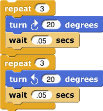 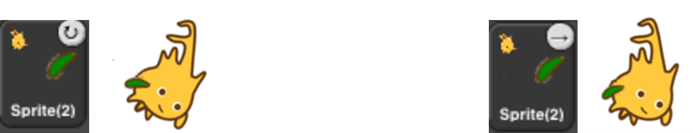
Top: turning the part: the green arm. Bottom: turning the anchor, with the arm synchronous (left) and dangling (right).
1.4 Reporter Blocks and Expressions
So far, we’ve used two kinds of blocks: hat blocks and command blocks. Another kind is the reporter block, which has an oval shape: . It’s called a “reporter” because when it’s run, instead of carrying out an action, it reports a value that can be used as an input to another block. If you drag a 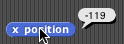 reporter into the scripting area by itself and click on it, the value it reports will appear in a speech balloon next to the block:
When you drag a reporter block over another block’s input slot, a white “halo” appears around that input slot, analogous to the white line that appears when snapping command blocks together:
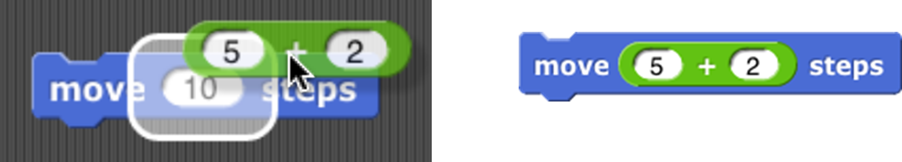
Don’t drop the input over a red halo: 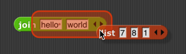
That’s used for a purpose explained in Section 6.2.1.
Here’s a simple script that uses a reporter block:
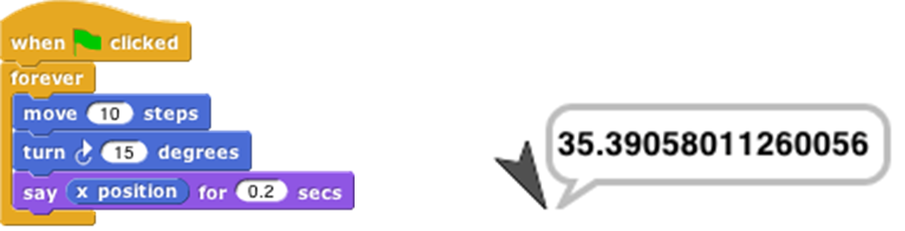
Here the x position reporter provides the first input to the say block. (The sprite’s X position is its horizontal position, how far left (negative values) or right (positive values) it is compared to the center of the stage. Similarly, the Y position is measured vertically, in steps above (positive) or below (negative) the center.)
You can do arithmetic using reporters in the Operators palette:
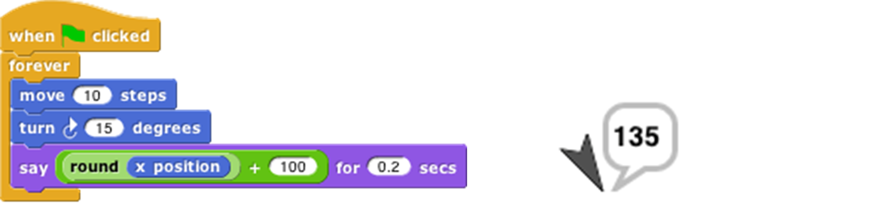
The round block rounds 35.3905… to 35, and the + block adds 100 to that. (By the way, the round block is in the Operators palette, just like +, but in this script it’s a lighter color with black lettering because Snap alternates light and dark versions of the palette colors when a block is nested inside another block from the same palette:
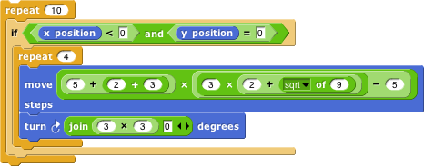
This aid to readability is called zebra coloring. A reporter block with its inputs, maybe including other reporter blocks, such as , is called an expression.
1.5 Predicates and Conditional Evaluation
Most reporters report either a number, like , or a text string, like  . A predicate is a special kind of reporter that always reports true or false. Predicates have a hexagonal shape:
. A predicate is a special kind of reporter that always reports true or false. Predicates have a hexagonal shape: 
The special shape is a reminder that predicates don’t generally make sense in an input slot of blocks that are expecting a number or text. You wouldn’t say , although (as you can see from the picture) Snap lets you do it if you really want. Instead, you normally use predicates in special hexagonal input slots like this one:
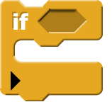
The C-shaped if block runs its input script if (and only if) the expression in its hexagonal input reports true. 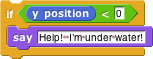
A really useful block in animations runs its input script repeatedly until a predicate is satisfied: 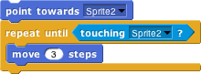
If, while working on a project, you want to omit temporarily some commands in a script, but you don’t want to forget where they belong, you can say
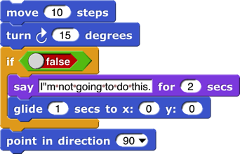
Sometimes you want to take the same action whether some condition is true or false, but with a different input value. For this purpose you can use the reporter if block :
The technical term for a true or false value is a “Boolean” value; it has a capital B because it’s named after a person, George Boole, who developed the mathematical theory of Boolean values. Don’t get confused; a hexagonal block is a predicate, but the value it reports is a Boolean.
Another quibble about vocabulary: Many programming languages reserve the name “procedure” for Commands (that carry out an action) and use the name “function” for Reporters and Predicates. In this manual, a procedure is any computational capability, including those that report values and those that don’t. Commands, Reporters, and Predicates are all procedures. The words “a Procedure type” are shorthand for “Command type, Reporter type, or Predicate type.”
If you want to put a constant Boolean value in a hexagonal slot instead of a predicate-based expression, hover the mouse over the block and click on the control that appears:
1.6 Variables
Try this script: 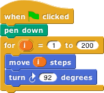
The input to the move block is an orange oval. To get it there, drag the orange oval that’s part of the for block : 
The orange oval is a variable: a symbol that represents a value. (I took this screenshot before changing the second number input to the for block from the default 10 to 200, and before dragging in a turn block.) For runs its script input repeatedly, just like repeat, but before each repetition it sets the variable i to a number starting with its first numeric input, adding 1 for each repetition, until it reaches the second numeric input. In this case, there will be 200 repetitions, first with i=1, then with i=2, then i=3, and so on until i=200 for the final repetition. The result is that each move draws a longer and longer line segment, and that’s why the picture you see is a kind of spiral. (If you try again with a turn of 90 degrees instead of 92, you’ll see why this picture is called a “squiral.”)
The variable i is created by the for block, and it can only be used in the script inside the block’s C-slot. (By the way, if you don’t like the name i, you can change it by clicking on the orange oval without dragging it, which will pop up a dialog window in which you can enter a different name: 
“I” isn’t a very descriptive name; you might prefer “length” to indicate its purpose in the script. “I” is traditional because mathematicians tend to use letters between i and n to represent integer values, but in programming languages we don’t have to restrict ourselves to single-letter variable names.)
1.6.1 Global Variables
You can create variables “by hand” that aren’t limited to being used within a single block. At the top of the Variables palette, click the “Make a variable” button:
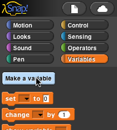
This will bring up a dialog window in which you can give your variable a name:
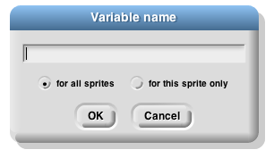
The dialog also gives you a choice to make the variable available to all sprites (which is almost always what you want) or to make it visible only in the current sprite. You’d do that if you’re going to give several sprites individual variables with the same name, so that you can share a script between sprites (by dragging it from the current sprite’s scripting area to the picture of another sprite in the sprite corral), and the different sprites will do slightly different things when running that script because each has a different value for that variable name.
If you give your variable the name “name” then the Variables palette will look like this:
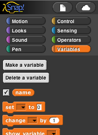
There’s now a “Delete a variable” button, and there’s an orange oval with the variable name in it, just like the orange oval in the for block. You can drag the variable into any script in the scripting area. Next to the oval is a checkbox, initially checked. When it’s checked, you’ll also see a variable watcher on the stage: 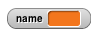
When you give the variable a value, the orange box in its watcher will display the value.
How do you give it a value? You use the set block : 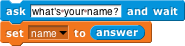
Note that you don’t drag the variable’s oval into the set block! You click on the downarrow in the first input slot, and you get a menu of all the available variable names.
If you do choose “For this sprite only” when creating a variable, its block in the palette looks like this:
The location-pin icon is a bit of a pun on a sprite-local variable . It’s shown only in the palette.
1.6.2 Script Variables
In the name example above, our project is going to carry on an interaction with the user, and we want to remember their name throughout the project. That’s a good example of a situation in which a global variable (the kind you make with the “Make a variable” button) is appropriate. Another common example is a variable called “score” in a game project. But sometimes you only need a variable temporarily, during the running of a particular script. In that case you can use the script variables block to make the variable:

As in the for block, you can click on an orange oval in the script variables block without dragging to change its name. You can also make more than one temporary variable by clicking on the right arrow at the end of the block to add another variable oval:
1.6.3 Renaming variables
There are several reasons why you might want to change the name of a variable:
It has a default name, such as the a in script variables or the i in the
forblock.It conflicts with another name, such as a global variable, that you want to use in the same script.
You just decide a different name would be more self-documenting.
In the first and third case, you probably want to change the name everywhere it appears in that script, or even in all scripts. In the second case, if you’ve already used both variables in the script before realizing that they have the same name, you’ll want to look at each instance separately to decide which ones to rename. Both of these operations are possible by right-clicking or control-clicking on a variable oval.
If you right-click on an orange oval in a context in which the variable is used, then you are able to rename just that one orange oval:
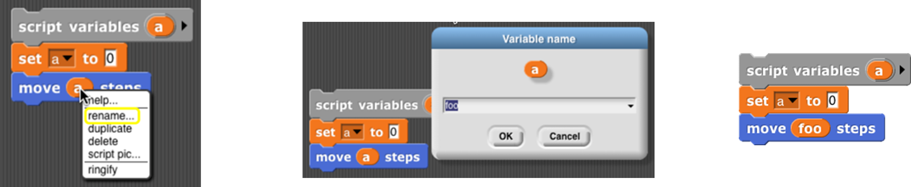
If you right-click on the place where the variable is defined (a script variables block, the orange oval for a global variable in the Variables palette, or an orange oval that’s built into a block such as the “i” in for), then you are given two renaming options, “rename” and “rename all.” If you choose “rename,” then the name is changed only in that one orange oval, as in the previous case:
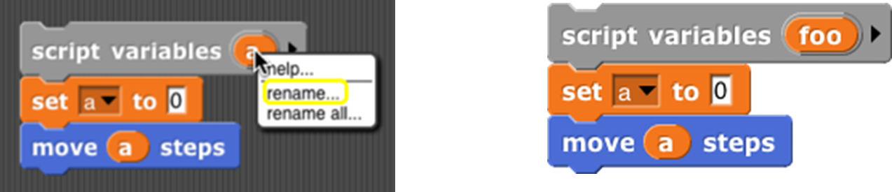
But if you choose “rename all,” then the name will be changed throughout the scope of the variable (the script for a script variable, or everywhere for a global variable):
1.6.4 Transient variables
So far we’ve talked about variables with numeric values, or with short text strings such as someone’s name. But there’s no limit to the amount of information you can put in a variable; in Chapter IV you’ll see how to use lists to collect many values in one data structure, and in Chapter VIII you’ll see how to read information from web sites.
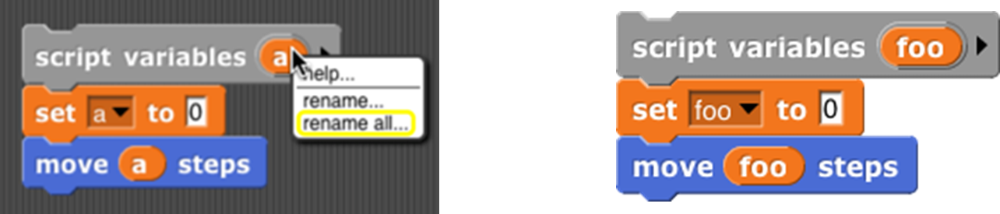
When you use these capabilities, your project may take up a lot of memory in the computer. If you get close to the amount of memory available to Snap, then it may become impossible to save your project. (Extra space is needed temporarily to convert from Snap’s internal representation to the form in which projects are exported or saved.) If your program reads a lot of data from the outside world that will still be available when you use it next, you might want to have values containing a lot of data removed from memory before saving the project. To do this, right-click or control-click on the orange oval in the Variables palette, to see this menu: 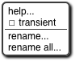
You already know about the rename options, and “help…” displays a help screen about variables in general. Here we’re interested in the check box next to transient. If you check it, this variable’s value will not be saved when you save your project. Of course, you’ll have to ensure that when your project is loaded, it recreates the needed value and sets the variable to it.
1.7 Debugging
Snap provides several tools to help you debug a program. They center around the idea of pausing the running of a script partway through, so that you can examine the values of variables.
1.7.2 Breakpoints : the pause all block
The pause button is great if your program seems to be in an infinite loop, but more often you’ll want to set a breakpoint, a particular point in a script at which you want to pause. The block, near the bottom of the Control palette, can be inserted in a script to pause when it is run. So, for example, if your program is getting an error message in a particular block, you could use pause all just before that block to look at the values of variables just before the error happens.
The pause all block turns bright cyan while paused. Also, during the pause, you can right-click on a running script and the menu that appears will give you the option to show watchers for temporary variables of the script:
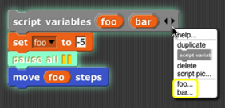
But what if the block with the error is run many times in a loop, and it only errors when a particular condition is true — for example, when the value of some variable is negative, which shouldn’t ever happen. In the iteration library (see Section 1.9 for more about how to use libraries) is a breakpoint block that lets you set a conditional breakpoint, and automatically display the relevant variables before pausing. Here’s a sample use of it:
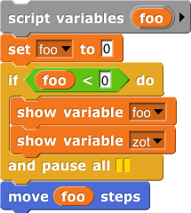
(In this contrived example, variable zot comes from outside the script but is relevant to its behavior.) When you continue (with the pause button), the temporary variable watchers are removed by this breakpoint block before resuming the script. The breakpoint block isn’t magic; you could alternatively just put a pause all inside an if.2
1.7.3 Visible stepping
Sometimes you’re not exactly sure where the error is, or you don’t understand how the program got there. To understand better, you’d like to watch the program as it runs, at human speed rather than at computer speed. You can do this by clicking the visible stepping button ( ), before running a script or while the script is paused. The button will light up ( ) and a speed control slider will appear in the toolbar. When you start or continue the script, its blocks and input slots will light up cyan one at a time:
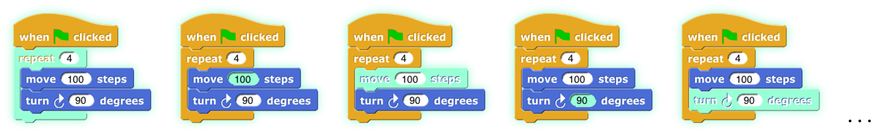
In this simple example, the inputs to the blocks are constant values, but if an input were a more complicated expression involving several reporter blocks, each of those would light up as they are called. Note that the input to a block is evaluated before the block itself is called, so, for example, the 100 lights up before the move.
The speed of stepping is controlled by the slider. If you move the slider all the way to the left, the speed is zero, the pause button turns into a step button , and the script takes a single step each time you push it. The name for this is single stepping.
If several scripts that are visible in the scripting area are running at the same time, all of them are stepped in parallel. However, consider the case of two repeat loops with different numbers of blocks. While not stepping, each script goes through a complete cycle of its loop in each display cycle, despite the difference in the length of a cycle. In order to ensure that the visible result of a program on the stage is the same when stepped as when not stepped, the shorter script will wait at the bottom of its loop for the longer script to catch up.
When we talk about custom blocks in Chapter 3, we’ll have more to say about visible stepping as it affects those blocks.
1.8 Etcetera
This manual doesn’t (yet)explain every block in detail. There are many more motion blocks, sound blocks, costume and graphics effects blocks, and so on. If you would like to find information on specific blocks, go to ?sec-all-blocks. You can also learn what they all do by experimentation, and by reading the “help screens” that you can get by right-clicking or control-clicking a block and selecting “help…” from the menu that appears. If you forget what palette (color) a block is, but you remember at least part of its name, type control-F and enter the name in the text block that appears in the palette area.
Here are some of the primitive blocks that don’t exist in Scratch:
reports, a new costume consisting of everything that’s drawn on the stage by any sprite. Right-clicking the block in the scripting area gives the option to change it to if vector logging is enabled. See ?para-log-pen-vectors.
Print characters in the given point size on the stage, at the sprite’s position and in its direction. The sprite moves to the end of the text. (That’s not always what you want, but you can save the sprite’s position before using it, and sometimes you need to know how big the text turned out to be, in turtle steps.) If the pen is down, the text will be underlined.
Takes a sprite as input. Like stamp except that the costume is stamped onto the selected sprite instead of onto the stage. (Does nothing if the current sprite doesn’t overlap the chosen sprite.)
Takes a sprite as input. Erases from that sprite’s costume the area that overlaps with the current sprite’s costume. (Does not affect the costume in the chosen sprite’s wardrobe, only the copy currently visible.)
See ?fig-generic-when.
See Section 1.7.2.
Runs only this script until finished. In the Control palette even though it’s gray.
Reporter version of the if/else primitive command block . Only one of the two branches is evaluated, depending on the value of the first input.
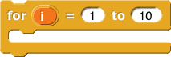 Looping block like repeat but with an index variable .
Declare local variables in a script.
See Chapter 9.
 reports the value of a graphics effect.
reports the value of a graphics effect.
Constant true or false value. See ?sec-predicates-and-conditional-evaluation.
Create a primitive using JavaScript. (This block is disabled by default; the user must check “Javascript extensions” in the setting menu each time a project is loaded.)
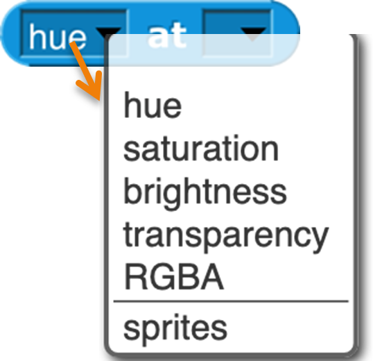
The at block lets you examine the screen pixel directly behind the rotation center of a sprite, the mouse, or an arbitrary (x,y) coordinate pair dropped onto the second menu slot. The first five items of the left menu let you examine the color visible at the position. (The “RGBA” option reports a list.) The “sprites” option reports a list of all sprites, including this one, any point of which overlaps this sprite’s rotation center (behind or in front). This is a hyperblock with respect to its second input.
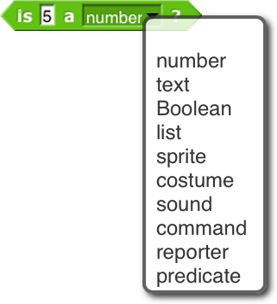 Checks the data type of a value.
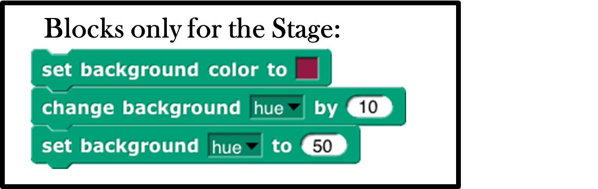 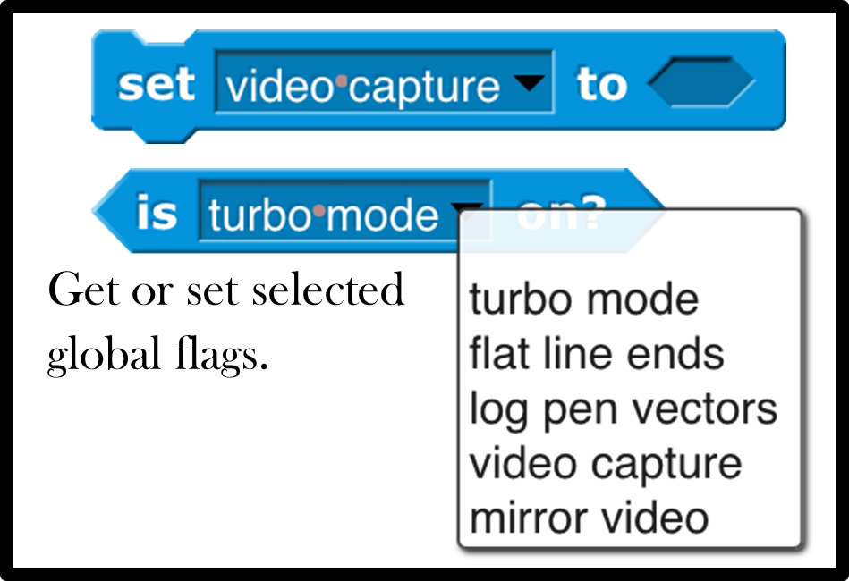

Turn the text into a list, using the second input as the delimiter between items. The default delimiter, indicated by the brown dot in the input slot, is a single space character. “Letter” puts each character of the text in its own list item. “Word” puts each word in an item. ( Words are separated by any number of consecutive space, tab, carriage return, or newline characters.) “Line” is a newline character (0xa); “tab” is a tab character (0x9); “cr” is a carriage return (0xd). “Csv” and “json” split formatted text into lists of lists; see Section 4.5.1. “Blocks” takes a script as the first input, reporting a list structure representing the structure of the script. See Chapter XI.
For lists, reports true only if its two input values are the very same list, so changing an item in one of them is visible in the other. (For =, lists that look the same are the same.) For text strings, uses case-sensitive comparison, unlike =, which is case-independent.
These hidden blocks can be found with the relabel option of any dyadic arithmetic block. They’re hidden partly because writing them in Snap is a good, pretty easy programming exercise. Note: the two inputs to atan2 are Δx and Δy in that order, because we measure angles clockwise from north. max /index{max block} and min /index{min block} are variadic; by clicking the arrowhead, you can provide additional inputs.
 Similarly, these hidden predicates can be found by relabeling the relational predicates.
Similarly, these hidden predicates can be found by relabeling the relational predicates.
1.8.1 Metaprogramming (see Chapter 11)
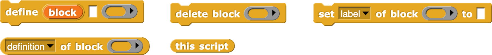
These blocks support metaprogramming, which means manipulating blocks and scripts as data. This is not the same as manipulating procedures (see Chapter VI. ), which are what the blocks mean; in metaprogramming the actual blocks, what you see on the screen, are the data. This capability is new in version 8.0.
1.8.2 First class list blocks (see Chapter IV, page46):
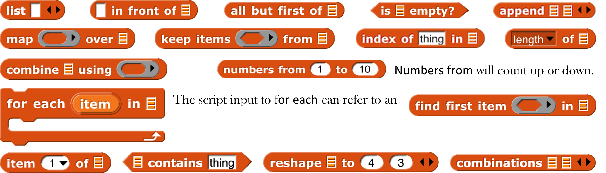
Numbers from will count up or down.
report the sprite or mouse position as a two-item vector (x,y).
First class procedure blocks (see Chapter VI, page65):
First class continuation blocks (see Chapter X, page93):
First class sprite, costume, and sound blocks (see Chapter VII, page73):
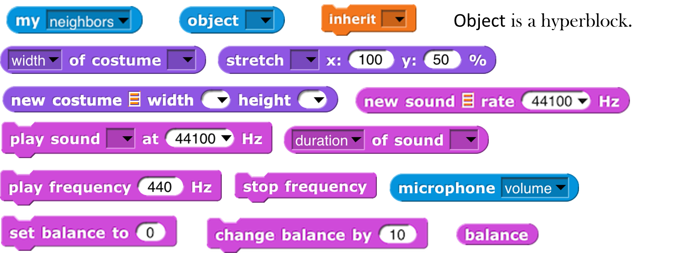 Object is a hyperblock.
Scenes:
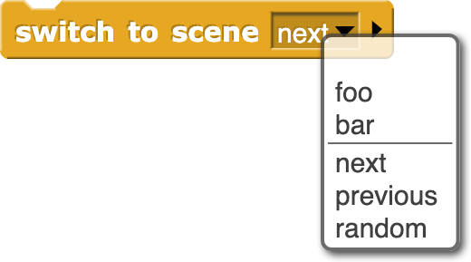 The major new feature of version 7.0 is scenes: A project can include within it sub-projects, called scenes, each with its own stage, sprites, scripts, and so on. This block makes another scene active, replacing the current one.
Nothing is automatically shared between scenes: no sprites, no blocks, no variables. But the old scene can send a message to the new one, to start it running, with optional payload as in broadcast (See ?sec-broadcast).
In particular, you can say
if the new scene expects to be started with a green flag signal.
These aren’t new blocks but they have a new feature: These accept two-item (x,y) lists as input, and have extended menus (also including other sprites):
“Center” means the center of the stage, the point at (0,0). “Direction” is in the point in direction sense, the direction that would leave this sprite pointing toward another sprite, the mouse, or the center. “Ray length” is the distance from the center of this sprite to the nearest point on the other sprite, in the current direction.
The stop block has two extra menu choices. Stop this block is used inside the definition of a custom block to stop just this invocation of this custom block and continue the script that called it. Stop all but this script is good at the end of a game to stop all the game pieces from moving around, but keep running this script to provide the user’s final score. The last two menu choices add a tab at the bottom of the block because the current script can continue after it.
The new “pen trails” option is true if the sprite is touching any drawn or stamped ink on the stage. Also, touching will not detect hidden sprites, but a hidden sprite can use it to detect visible sprites.
The video on block has a snap option that takes a snapshot and reports it as a costume. It is hyperized with respect to its second input.
The “neg” option is a monadic negation operator , equivalent to . “lg” is log2. “id” is the identity function, which reports its input. “sign” reports 1 for positive input, 0 for zero input, or -1 for negative input.
The name was changed to clarify it is different from
Extended mouse interaction events, sensing clicking, dragging, hovering, etc. The “stopped” option triggers when all scripts are stopped, as with the stop button; it is useful for robots whose hardware interface must be told to turn off motors. A when I am stopped script can run only for a limited time.
Extended broadcast : Click the right arrowhead to direct the message to a single sprite or the stage. Click again to add any value as a payload to the message. {#para-broadcast}
Extended when I receive: Click the right arrowhead to expose a script variable (click on it to change its name, like any script variable) that will be set to the data of a matching broadcast. If the first input is set to “any message,” then the data variable will be set to the message, if no payload is included with the broadcast, or to a two-item list containing the message and the payload.
If the input is set to “any key,” then a right arrowhead appears:
and if you click it, a script variable key is created whose value is the key that was pressed. (If the key is one that’ represented in the input menu by a word or phrase, e.g., “enter” or “up arrow,” then the value of key will be that word or phrase, except for the space character, which is represented as itself in key.)
The RGB(A) option accepts a single number, which is a grayscale value 0-255; a two-number list, grayscale plus opacity 0-255; a three-item RGB list, or a four-item RGBA list.
1.8.3 Using Lists with the Ask Block
These ask features and more in the Menus library.
The of block has an extended menu of attributes of a sprite. Position reports an (x,y) vector. Size reports the percentage of normal size, as controlled by the set size block in the Looks category. Left, right, etc. report the stage coordinates of the corresponding edge of the sprite’s bounding box. Variables reports a list of the names of all variables in scope (global, sprite-local, and script variables if the right input is a script.)
1.9 Libraries
There are several collections of useful procedures that aren’t Snap primitives, but are provided as libraries. To include a library in your project, choose the Libraries… option in the file () menu.
The library menu is divided into five broad categories. The first is, broadly, utilities: blocks that might well be primitives. They might be useful in all kinds of projects.
The second category is blocks related to media computation: ones that help in dealing with costumes and sounds (a/k/a Jens libraries). There is some overlap with “big data” libraries, for dealing with large lists of lists.
The third category is, roughly, specific to non-media applications (a/k/a Brian libraries). Three of them are imports from other programming languages: words and sentences from Logo, array functions from APL, and streams from Scheme. Most of the others are to meet the needs of the BJC curriculum.
The fourth category is major packages (extensions) provided by users.
The fifth category provides support for hardware devices such as robots, through general interfaces, replacing specific hardware libraries in versions before 7.0.
When you click on the one-line description of a library, you are shown the actual blocks in the library and a longer explanation of its purpose. You can browse the libraries to find one that will satisfy your needs.
The libraries and their contents may change, but as of this writing the list library has these blocks:
(The lightning bolt (⚡️) before the name in several of these blocks means that they use compiled HOFs or JavaScript primitives to achieve optimal speed. They are officially considered experimental.) Remove duplicates from reports a list in which no two items are equal. The sort block takes a list and a two-input comparison predicate, such as <, and reports a list with the items sorted according to that comparison. The assoc block is for looking up a key in an association list: a list of two-item lists. In each two-item list, the first is a key and the second is a value. The inputs are a key and an association list; the block reports the first key-value pair whose key is equal to the input key.
For each item is a variant of the primitive version that provides a # variable containing the position in the input list of the currently considered item. Multimap is a version of map that allows multiple list inputs, in which case the mapping function must take as many inputs as there are lists; it will be called with all the first items, all the second items, and so on. Zip takes any number of lists as inputs; it reports a list of lists: all the first items, all the second items, and so on. The no-name identity function reports its input.
Sentence and sentence ➔ list are borrowed from the word and sentence library to serve as a variant of append that accepts non-lists as inputs. Printable takes a list structure of any depth as input and reports a compact representation of the list as a text string.
The iteration, composition library has these blocks:
Catch and throw provide a nonlocal exit facility. You can drag the tag from a catch block to a throw inside its C-slot, and the throw will then jump directly out to the matching catch without doing anything in between.
If do and pause all is for setting a breakpoint while debugging code. The idea is to put show variable blocks for local variables in the C-slot; the watchers will be deleted when the user continues from the pause.
Ignore is used when you need to call a reporter but you don’t care about the value it reports. (For example, you are writing a script to time how long the reporter takes.)
The cascade blocks take an initial value and call a function repeatedly on that value, f(f(f(f…(x)))).
The compose block takes two functions and reports the function f(g(x)).
The first three repeat blocks are variants of the primitive repeat until block, giving all four combinations of whether the first test happens before or after the first repetition, and whether the condition must be true or false to continue repeating. The last repeat block is like the repeat primitive, but makes the number of repetitions so far available to the repeated script. The next two blocks are variations on for : the first allows an explicit step instead of using ±1, and the second allows any values, not just numbers; inside the script you say
replacing the grey block in the picture with an expression to give the next desired value for the loop index.
Pipe allows reordering a nested composition with a left-to-right one:

The stream library has these blocks:
Streams are a special kind of list whose items are not computed until they are needed. This makes certain computations more efficient, and also allows the creation of lists with infinitely many items, such as a list of all the positive integers. The first five blocks are stream versions of the list blocks.
in front of, item 1 of, all but first of, map, and keep. Show stream takes a stream and a number as inputs, and reports an ordinary list of the first n items of the stream. Stream is like the primitive list; it makes a finite stream from explicit items. Sieve is an example block that takes as input the stream of integers starting with 2 and reports the stream of all the prime numbers. Stream with numbers from is like the numbers from block for lists, except that there is no endpoint; it reports an infinite stream of numbers.
The word and sentence library has these blocks:
This library has the goal of recreating the Logo approach to handling text: A text isn’t best viewed as a string of characters, but rather as a sentence, made of words, each of which is a string of letters. With a few specialized exceptions, this is why people put text into computers: The text is sentences of natural (i.e., human) language, and the emphasis is on words as constitutive of sentences. You barely notice the letters of the words, and you don’t notice the spaces between them at all, unless you’re proof-reading. (Even then: Proofreading is diffciult, because you see what you expect to see, what will make the snetence make sense, rather than the misspelling in front of of your eyes.) Internally, Logo stores a sentence as a list of words, and a word as a string of letters.
Inexplicably, the designers of Scratch chose to abandon that tradition, and to focus on the representation of text as a string of characters. The one vestige of the Logo tradition from which Scratch developed is the block named letter (1) of (world) , rather than character (1) of (world). Snap inherits its text handling from Scratch.
In Logo, the visual representation of a sentence (a list of words) looks like a natural language sentence: a string of words with spaces between them. In Snap, the visual representation of a list looks nothing at all like natural language. On the other hand, representing a sentence as a string means that the program must continually re-parse the text on every operation, looking for spaces, treating multiple consecutive spaces as one, and so on. Also, it’s more convenient to treat a sentence as a list of words rather than a string of words because in the former case you can use the higher order functions map, keep, and combine on them. This library attempts to be agnostic as to the internal representation of sentences. The sentence selectors accept any combination of lists and strings; there are two sentence constructors, one to make a string (join words) and one to make a list (sentence).
The selector names come from Logo, and should be self-explanatory. However, because in a block language you don’t have to type the block name, instead of the terse butfirst or the cryptic bf we spell out “all but first of” and include “word” or “sentence” to indicate the intended domain. There’s no first letter of block because letter 1 of serves that need. Join words (the sentence-as-string constructor) is like the primitive join except that it puts a space in the reported value between each of the inputs. Sentence (the List-colored sentence-as-list constructor) accepts any number of inputs, which can be words, sentences-as-lists, or sentences-as-strings. (If inputs are lists of lists, only one level of flattening is done.) Sentence reports a list of words; there will be no empty words or words containing spaces. The four blocks with right-arrows in their names convert back and forth between text strings (words or sentences) and lists. (Splitting a word into a list of letters is unusual unless you’re a linguist investigating orthography.) Printable takes a list (including a deep list) of words as input and reports a text string in which parentheses are used to show the structure, as in Lisp/Scheme.
The pixels library has one block:

Costumes are first class data in Snap. Most of the processing of costume data is done by primitive blocks in the Looks category. (See page 79.) This library provides snap , which takes a picture using your computer’s camera and reports it as a costume.
The bar charts library has these blocks:
Bar chart of table takes a table (typically from a CSV data set) as input and reports a summary of the table grouped by the field in the specified column number. The remaining three inputs are used only if the field values are numbers, in which case they can be grouped into buckets (e.g., decades, centuries, etc.). Those inputs specify the smallest and largest values of interest and, most importantly, the width of a bucket (10 for decades, 100 for centuries). If the field isn’t numeric, leave these three inputs empty or set them to zero. Each string value of the field is its own bucket, and they appear sorted alphabetically.
Bar chart of table reports a new table with three columns. The first column contains the bucket name or smallest number. The second column contains a nonnegative integer that says how many records in the input table fall into this bucket. The third column is a subtable containing the actual records from the original table that fall into the bucket. Plot bar chart takes the table reported by bar chart and graphs it on the stage, with axes labelled appropriately. The remaining blocks are helpers for those.
If your buckets aren’t of constant width, or you want to group by some function of more than one field, load the “Frequency Distribution Analysis” library instead.
The multi-branched conditional library has these blocks:
The catch and throw blocks duplicate ones in the iteration library, and are included because they are used to implement the others. The cases: if/then block sets up a multi-branch conditional, similar to cond in Lisp or switch in C -family languages. The first branch is built into the cases block; it consists of a Boolean test in the first hexagonal slot and an action script, in the C-slot, to be run if the test reports true. The remaining branches go in the variadic hexagonal input at the end; each branch consists of an else if block, which includes the Boolean test and the corresponding action script, except possibly for the last branch, which can use the unconditional else block. As in other languages, once a branch succeeds, no other branches are tested.
1.9.1
The variadic library has these blocks:
These are versions of the associative operators and, and or that take any number of inputs instead of exactly two inputs. As with any variadic input, you can also drop a list of values onto the arrowheads instead of providing the inputs one at a time As of version 8.0, the arithmetic operators sum, product, minimum, and maximum are no longer included, because the primitive operators + x, min, and max are themselves variadic.
The colors and crayons library has these blocks:
It is intended as a more powerful replacement for the primitive set pen block, including first class color support; HSL color specification as a better alternative to the HSV that Snap inherits from JavaScript; a “fair hue” scale that compensates for the eye’s grouping a wide range of light frequencies as green while labelling mere slivers as orange or yellow; the X11/W3C standard color names; RGB in hexadecimal; a linear color scale (as in the old days, but better) based on fair hues and including shades (darker colors) and grayscale. Another linear scale is a curated set of 100 “crayons,” explained further on the next page.
Colors are created by the block (for direct user selection), the color from to specify a color numerically, or by , which reports the color currently in use by the pen. The from color block reports names or numbers associated with a color:

Colors can be created from other colors:
The three blocks with pen in their names are improved versions of primitive Pen blocks. In principle set pen, for example, could be implemented using a (hypothetical) set pen to color composed with the color from block, but in fact set pen benefits from knowing how the pen color was set in its previous invocation, so it’s implemented separately from color from. Details in Appendix A.
The recommended way to choose a color is from one of two linear scales: the continuous color numbers and the discrete crayons:
Color numbers are based on fair hues, a modification of the spectrum (rainbow) hue scale that devotes less space to green and more to orange and yellow, as well as promoting brown to a real color. Here is the normal hue scale, for reference:
Here is the fair hue scale:
Here is the color number scale:
(The picture is wider so that pure spectral colors line up with the fair hue scale.)
And here are the 100 crayons :
The color from block, for example, provides different pulldown menus depending on which scale you choose:
You can also type the crayon name:
There are many scales:
The white slot at the end of some of the blocks has two purposes. It can be used to add a transparency to a color (0=opaque, 100=transparent):
or it can be expanded to enter three or four numbers for a vector directly into the block, so these are equivalent:
But note that a transparency number in a four-number RGBA vector is on the scale 255=opaque, 0=transparent, so the following are not equivalent:
Set pen crayon to provides the equivalent of a box of 100 crayons. They are divided into color groups, so the menu in the set pen crayon to input slot has submenus. The colors are chosen so that starting from crayon 0, change pen crayon by 10 rotates through an interesting, basic set of ten colors:
Using change pen crayon by 5 instead gives ten more colors, for a total of 20:
(Why didn’t we use the colors of the 100-crayon Crayola™ box? A few reasons, one of which is that some Crayola colors aren’t representable on RGB screens. Some year when you have nothing else to do, look up “color space” on Wikipedia. Also “crayon.” Oh, it’s deliberate that change pen crayon by 5 doesn’t include white, since that’s the usual stage background color. White is crayon 14.) Note that crayon 43 is “Variables”; all the standard block colors are included.
See Appendix A (Section B.1.1) for more information.
The crayon library has only the crayon features, without the rest of the colors package.
The catch errors library has these blocks:
The safely try block allows you to handle errors that happen when your program is run within the program, instead of stopping the script with a red halo and an obscure error message. The block runs the script in its first C-slot. If it finishes without an error, nothing else happens. But if an error happens, the code in the second C-slot is run. While that second script is running, the variable contains the text of the error message that would have been displayed if you weren’t catching the error. The error block is sort of the opposite: it lets your program generate an error message, which will be displayed with a red halo unless it is caught by safely try. Safely try reporting is the reporter version of safely try.
The text costumes library has only two blocks:
Costume from text reports a costume that can be used with the switch to costume block to make a button:
Costume with background reports a costume made from another costume by coloring its background, taking a color input like the set pen color to RGB(A) block and a number of turtle steps of padding around the original costume. These two blocks work together to make even better buttons:
The text to speech library has these blocks:
This library interfaces with a capability in up-to-date browsers, so it might not work for you. It works best if the accent matches the text!
The parallelization library contains these blocks:
The two do in parallelblocks take any number of scripts as inputs. Those scripts will be run in parallel, like ordinary independent scripts in the scripting area. The do in parallel and wait version waits until all of those scripts have finished before continuing the script below the block.
The create variables library has these blocks:
These blocks allow a program to perform the same operation as the button, making global, sprite local, or script variables, but allowing the program to compute the variable name(s). It can also set and find the values of these variables, show and hide their stage watchers, delete them, and find out if they already exist.
The getters and setters library has these blocks:
The purpose of this library is to allow program access to the settings controlled by user interface elements, such as the settings menu . The setting block reports a setting; the set flag block sets yes-or-no options that have checkboxes in the user interface, while the set value block controls settings with numeric or text values, such as project name.
Certain settings are ordinarily remembered on a per-user basis, such as the “zoom blocks” value. But when these settings are changed by this library, the change is in effect only while the project using the library is loaded. No permanent changes are made. Note: this library has not been converted for version 7.0, so you’ll have to enable Javascript extensions to use it.
The bignums, rationals, complex #s library has these blocks:
The USE BIGNUMS block takes a Boolean input, to turn the infinite precision feature on or off. When on, all of the arithmetic operators are redefined to accept and report integers of any number of digits (limited only by the memory of your computer) and, in fact, the entire Scheme numeric tower, with exact rationals and with complex numbers. The Scheme number block has a list of functions applicable to Scheme numbers, including subtype predicates such as rational? and infinite?, and selectors such as numerator and real-part.
The ! block computes the factorial function, useful to test whether bignums are turned on. Without bignums:
With bignums:
The 375-digit value of 200! isn’t readable on this page, but if you right-click on the block and choose “result pic,” you can open the resulting picture in a browser window and scroll through it. (These values end with a bunch of zero digits. That’s not roundoff error; the prime factors of 100! and 200! include many copies of 2 and 5.) The block with no name is a way to enter things like 3/4 and 4+7i into numeric input slots by converting the slot to Any type.
The strings, multi-line input library provides these blocks:
All of these could be written in Snap itself, but these are implemented using the corresponding JavaScript library functions directly, so they run fast. They can be used, for example, in scraping data from a web site. The command use case-independent comparisons applies only to this library. The multiline block accepts and reports a text input that can include newline characters.
The animation library has these blocks:
Despite the name, this isn’t only about graphics; you can animate the values of a variable, or anything else that’s expressed numerically.
The central idea of this library is an easing function , a reporter whose domain and range are real numbers between 0 and 1 inclusive. The function represents what fraction of the “distance” (in quotes because it might be any numeric value, such as temperature in a simulation of weather) from here to there should be covered in what fraction of the time. A linear easing function means steady progression. A quadratic easing function means starting slowly and accelerating. (Note that, since it’s a requirement that f(0)=0 and f(1)=1, there is only one linear easing function, f(x)=x, and similarly for other categories.) The block reports some of the common easing functions.
The two Motion blocks in this library animate a sprite. Glide always animates the sprite’s motion. Animate's first pulldown menu input allows you to animate horizontal or vertical motion, but will also animate the sprite’s direction or size. The animate setter block in Control lets you animate any numeric quantity with any easing function. The getter and setter inputs are best explained by example:
is equivalent to
The other blocks in the library are helpers for these four.
The serial ports library contains these blocks:
It is used to allow hardware developers to control devices such as robots that are connected to your computer via a serial port.
The frequency distribution analysis library has these blocks:
This is a collection of tools for analyzing large data sets and plotting histogram s of how often some value is found in some column of the table holding the data.
For more information go here:
https://tinyurl.com/jens-data
The audio comp library includes these blocks:
This library takes a sound, one that you record or one from our collection of sounds, and manipulates it by systematically changing the intensity of the samples in the sound and by changing the sampling rate at which the sound is reproduced. Many of the blocks are helpers for the plot sound block, used to plot the waveform of a sound. The play sound (primitive) block plays a sound. __ Hz for reports a sine wave as a list of samples.
The web services library has these blocks:
The first block is a generalization of the primitive url block , allowing more control over the various options in web requests: GET, POST, PUT, and DELETE, and fine control over the content of the message sent to the server. Current location reports your latitude and longitude. Listify takes some text in JSON format (see page 54) and converts it to a structured list. Value at key looks up a key-value pair in a (listified) JSON dictionary. The key:value: block is just a constructor for an abstract data type used with the other blocks
The database library contains these blocks:
It is used to keep data that persist from one Snap session to the next, if you use the same browser and the same login.
The world map library has these blocks:
Using any of the command blocks puts a map on the screen, in a layer in front of the stage’s background but behind the pen trails layer (which is in turn behind all the sprites). The first block asks your browser for your current physical location, for which you may be asked to give permission. The next two blocks get and set the map’s zoom amount; the default zoom of 10 fits from San Francisco not quite down to Palo Alto on the screen. A zoom of 1 fits almost the entire world. A zoom of 3 fits the United States; a zoom of 5 fits Germany. The zoom can be changed in half steps, i.e., 5.5 is different from 5, but 5.25 isn’t.
The next five blocks convert between stage coordinates (pixels) and Earth coordinates (latitude and longitude). The change by x: y: block shifts the map relative to the stage. The distance to block measures the map distance (in meters) between two sprites. The three reporters with current in their names find your actual location, again supposing that geolocation is enabled on your device. Update redraws the map; as costume reports the visible section of the map as a costume. Set style allows things like satellite pictures.
The APL primitives library contains these blocks:
For more information about APL, see Appendix C).
The list comprehension library has one block, zip:
Its first input is a function of two inputs. The two Any-type inputs are deep lists (lists of lists of…) interpreted as trees, and the function is called with every possible combination of a leaf node of the first tree and a leaf node of the second tree. But instead of taking atoms (non-lists) as the leaves, zip allows the leaves of each tree to be vectors (one-dimensional lists), matrices (two-dimensional lists), etc. The Number-type inputs specify the leaf dimension for each tree, so the function input might be called with a vector from the first tree and an atom from the second tree.
The bitwise library provides bitwise logic functions; each bit of the reported value is the result of applying the corresponding Boolean function to the corresponding bits of the input(s). The Boolean functions are not for ¬, and for ∧, or for ∨, and xor (exclusive or) for ⊻ . The remaining functions shift their first input left or right by the number of bits given by the second input. \<\< is left shift, \>\> is arithmetic right shift (shifting in one bits from the left), and \>\>\> is logical right shift (shifting in zero bits from the left). If you don’t already know what these mean, find a tutorial online.
The MQTT library supports the Message Queuing Telemetry Transport protocol, for connecting with IOT devices. See https://mqtt.org/ for more information.
The Signada library allows you to control a microBit or similar device that works with the Signada MicroBlocks project.
The menus library provides the ability to display hierarchical menus on the stage, using the ask block’s ability to take lists as inputs. See Section 1.8.3.
The SciSnap library and the TuneScope library are too big to discuss here and are documented separately at http://emu-online.de/ProgrammingWithSciSnap.pdf and https://maketolearn.org/creating-art-animations-and-music/ respectively.
One of the hat blocks, the generic “when anything” block , is subtly different from the others. When the stop sign is clicked, or when a project or sprite is loaded, this block doesn’t test whether the condition in its hexagonal input slot is true, so the script beneath it will not run, until some other script in the project runs (because, for example, you click the green flag). When generic when blocks are disabled, the stop sign will be square instead of octagonal. {#para-generic-when}↩︎
The hide variable and show variable block s can also be used to hide and show primitives in the palette. The pulldown menu doesn’t include primitive blocks, but there’s a generally useful technique to give a block input values it wasn’t expecting using run or call:
In order to use a block as an input this way, you must explicitly put a ring around it, by right-clicking on it and choosing ringify. More about rings in Chapter VI.↩︎